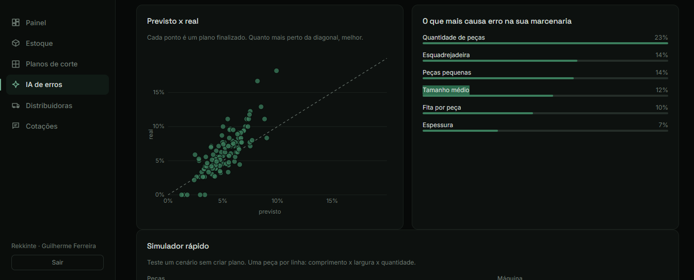

SaaS · em desenvolvimento
Kerfa — gestão para marcenarias
Sistema para marcenarias controlarem o estoque, lerem planos de corte em PDF (DinaBox, Promob, Corte Certo…), preverem erros de corte com IA e cotarem materiais com as distribuidoras pelo WhatsApp.
- Otimizador de plano de corte para seccionadora e CNC, respeitando veio, serra e refilo.
- Modelo de Gradient Boosting que aprende com o histórico de cada marcenaria.
- Cotação que testa todas as combinações de distribuidoras para achar a compra mais barata com frete.
- Login com PBKDF2, bloqueio após tentativas erradas, multiempresa e testes automatizados com pytest.